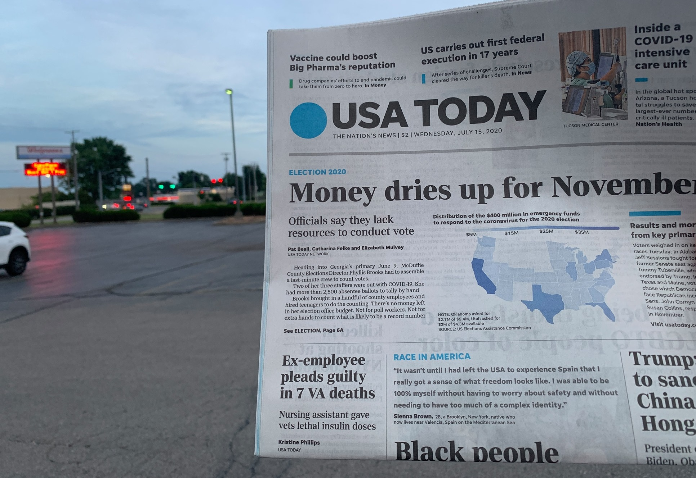

Voter Access Project 2020
In July we published a front-page story with USA Today showing how clerks across the country have been struggling to guarantee a safe and fair election this November. Together with the Milwaukee Journal Sentinel we revealed a system leaking from all sides during Wisconsin's election in April — buckling under the weight of a global pandemic and partisan bickering that kept the logistics of election day up in the air until less than a day before polls opened.
